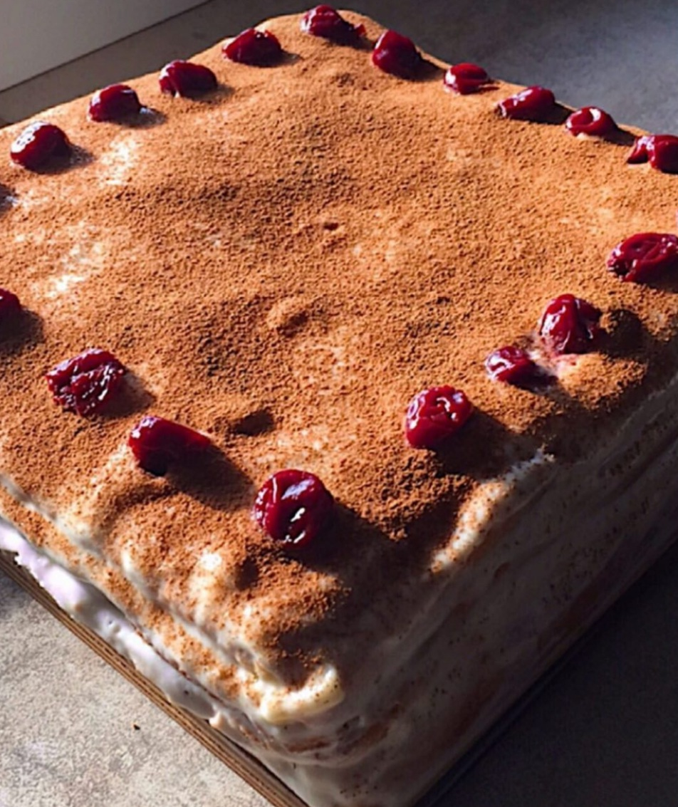

Ingrediente:
-300 gr făină
-1 praf de copt
-45 g cacao
-250 g zahar
-zahar vanilat
-6 ouă
-vișine
-225 g unt topit
-200 ml lapte bătut
1. Amestecăm făina cu praful de copt și cacao.
2. Adăugăm zahărul și vanilia.
3. Adăugăm ouăle și untul și începem să mixăm totul până se încorporează toate ingredientele.
4. La final adăugăm laptele bătut și mixăm până se omogenizează.
5. Aluatul rezultat îl turnăm în tavă tapetată cu hărtie de copt și dăm la cuptor pentru aproximativ 30-40 minute.
6. Scoatem din cuptor blatul și lăsăm să se răcorească. Mai apoi tăiem blatul în trei și ornamentăm tortul așa cum vrea fantezia voastră.
Poftă bună, dragii mei! 🤗